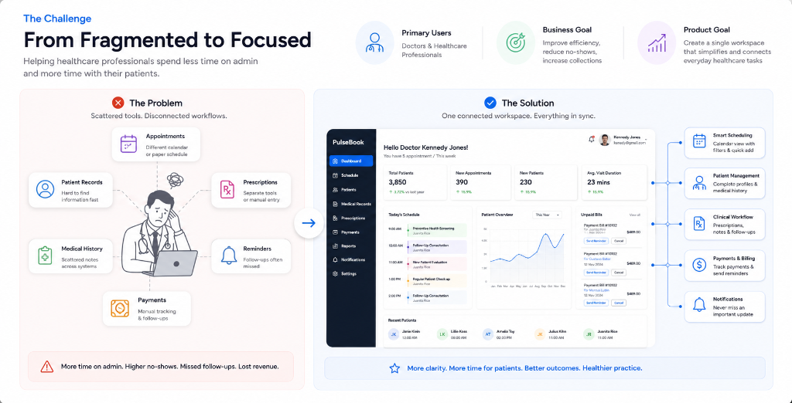
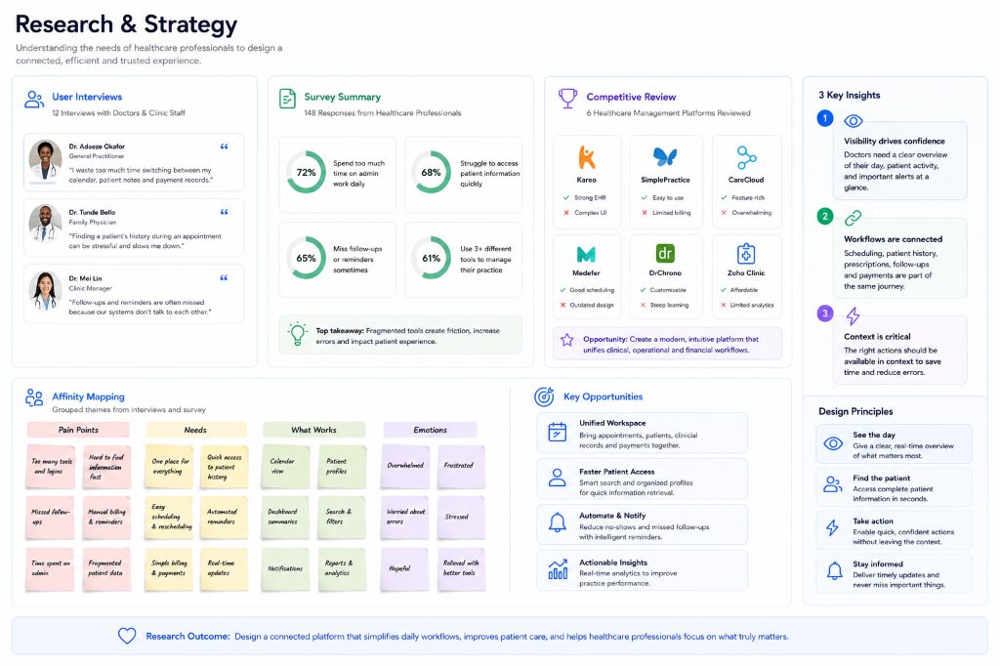
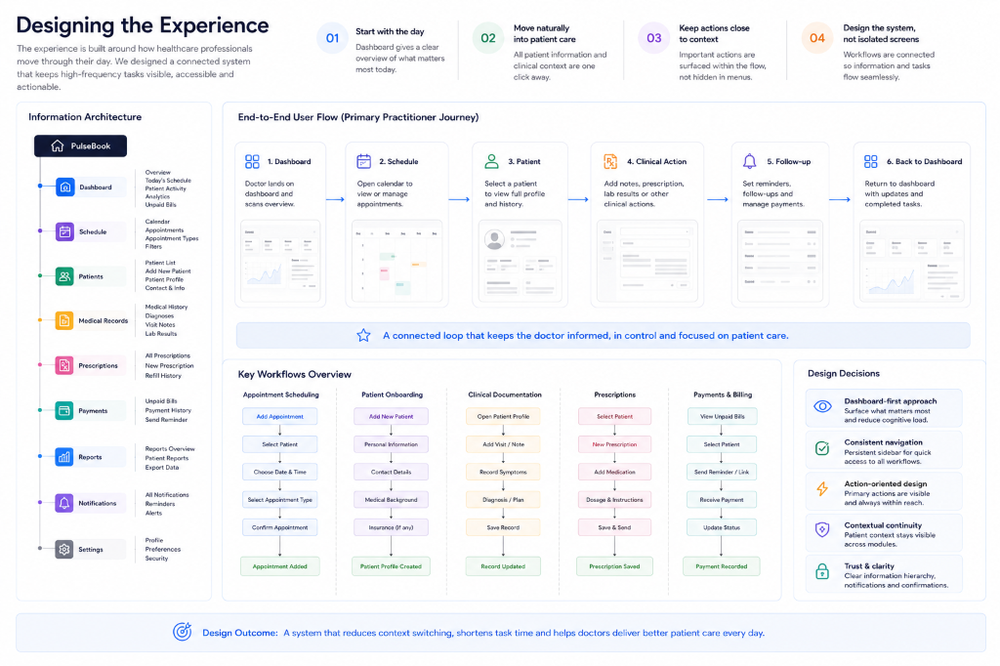
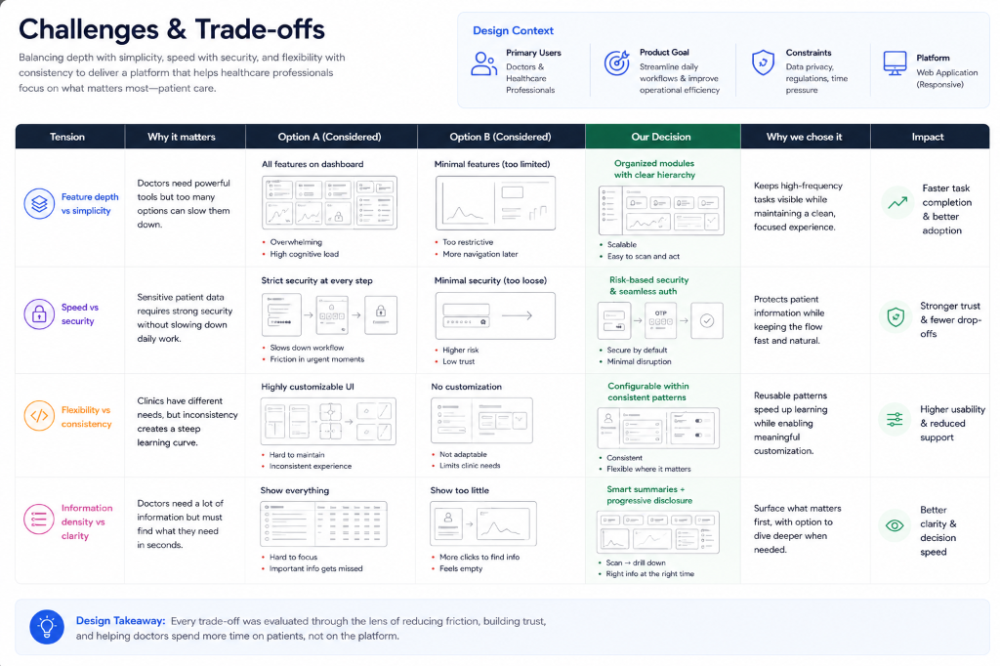

Push
Simplifying healthcare operations, one workflow at a time.
Push is a healthcare management platform designed to bring the everyday operations of a medical practice into one connected experience, from appointments and patient records to medical history, imaging, prescriptions, and payments.

The Challenge
Healthcare professionals operate across a wide range of clinical and administrative tasks, often moving between appointments, patient information, medical records, prescriptions, payments, and follow-ups. When these workflows feel disconnected, valuable time is spent navigating the system rather than focusing on patient care.
We saw an opportunity to bring these critical touchpoints together through a single, structured workspace, one that gives practitioners a clear view of their day while keeping deeper patient and operational information within easy reach.
The challenge was less about adding functionality and more about creating clarity across complexity. Push needed to make high-frequency tasks easy to find, quick to complete, and simple to revisit without overwhelming the practitioner.
We therefore centred the experience around three principles: visibility, speed, and continuity. These shaped the product architecture - from the dashboard and calendar experience to patient profiles, medical records, payments, and notifications - creating a more connected way to manage the practice.

Research & Strategy
We approached the discovery phase by looking at how healthcare professionals manage the operational demands of a busy practice, from appointments and patient information to payments, follow-ups, and day-to-day clinical activity.
Through 12 practitioner interviews, a short survey, and competitive analysis, we identified three themes that shaped the product direction.
01. Make the day immediately visible
Practitioners need to understand what requires their attention without moving across multiple parts of the product. Appointments, patient activity, outstanding payments, and important updates therefore needed to be visible at a glance.
02. Connect clinical and operational workflows
Scheduling a patient, reviewing their history, documenting care, and following up are not separate activities. We treated them as connected moments within the same practitioner journey.
03. Keep actions close to context
We reduced unnecessary navigation by placing relevant actions where decisions happen, whether that means adding an appointment, viewing patient details, sending a reminder, or managing a prescription.
Design Principles
These insights led to a simple experience model:
See the day. Find the patient. Take action. Stay informed.
This became the foundation for the dashboard, scheduling, patient management, clinical records, payments, and notification experiences, giving Push a consistent structure across the product.

Designing the Experience
We structured Push around the way practitioners move through their day. The experience makes it easy to understand what needs attention, find the right patient, complete an action, and stay informed.
The information architecture brings the core workflows into the primary navigation: Dashboard, Schedule, Patients, Medical Records, Prescriptions, Payments, Reports, Notifications, and Settings. This creates a clear foundation while keeping each area focused on its specific task.
01. Start with the day
The dashboard serves as the operational starting point. Rather than presenting isolated features, it brings patient volume, appointments, new patients, visit duration, today's schedule, patient activity, and unpaid bills into a single view.
02. Move naturally into patient care
We connected patient information with the clinical context around it. Practitioners can move between patient details, medical history, appointments, prescriptions, and related records without having to reconstruct the patient's story across separate areas of the product.
03. Keep actions close to context
Key actions are placed where they are most relevant, including adding appointments, viewing patient details, managing prescriptions, recording medical information, and handling payments. This reduces unnecessary navigation and keeps the experience focused on the task at hand.
04. Design the system, not isolated screens
Rather than designing each screen as an individual experience, we treated Push as one connected system. Scheduling connects to patient management, patient information connects to clinical records, and operational activity connects to payments and notifications.
The result is an experience where each part of the product supports the next, creating a more coherent workflow from managing the day to managing patient care.

Challenges & Trade-offs
Designing Push required us to find the right balance between depth and simplicity. The platform brings together appointments, patient records, prescriptions, payments, reports, notifications, and account settings, so the challenge was to make the breadth of the product feel manageable. We addressed this through persistent navigation, clear workflow separation, and consistent interaction patterns across the experience.
01. Balancing depth with simplicity
The product needed to support complex healthcare workflows without making everyday tasks feel complicated. We separated the major workflows while maintaining a consistent structure, allowing practitioners to move between them without having to relearn the interface.
02. Preserving clinical context
Patient information spans medical history, diagnoses, notes, prescriptions, billing, and supporting documents. Rather than scattering this information across disconnected areas, we used the patient profile as a contextual anchor, giving practitioners a clearer view of the information surrounding each patient.
03. Building trust into the experience
Security and account management were treated as part of the core product experience. The designs incorporate password management, two-step verification, session and device visibility, notifications, and account controls, giving practitioners greater visibility and control over how their account is managed.
Ultimately, the trade-off was not between functionality and simplicity. It was about creating enough structure for a complex product to feel simple to use.
Key Trade-offs
| Tension | Design Decision |
|---|---|
| Feature depth vs simplicity | Group workflows into focused modules |
| Speed vs security | Keep security controls accessible without disrupting daily tasks |
| Flexibility vs consistency | Reuse patterns across scheduling, patients, billing, and records |
| Information density vs clarity | Prioritise hierarchy, summaries, filters, and progressive detail |

Outcome & Reflection
Push's final direction brings a broad set of healthcare workflows into one connected operating experience. The dashboard provides a clear starting point, while scheduling, patient management, medical records, prescriptions, payments, reports, and notifications work together as parts of the same system.
The strongest outcome is continuity. Practitioners can move from their daily overview into a schedule, open a patient, review relevant clinical information, take action, and return to the wider practice context without losing their place.
For a live product, we would evaluate the experience through measures such as task completion time, appointment-management efficiency, patient-record retrieval, missed follow-ups, payment collection, and feature adoption. These would provide a clearer picture of whether the product is reducing friction across the workflows it was designed to support.
What We Learned
The project reinforced a simple principle: complex products do not necessarily need less functionality. They need better structure.
The biggest design opportunity was deciding what practitioners needed to see immediately, what could sit deeper within the experience, and how individual workflows could remain connected without creating unnecessary complexity.
For Push, that meant designing beyond individual screens and creating a system that gives practitioners clarity, context, and control throughout the day.